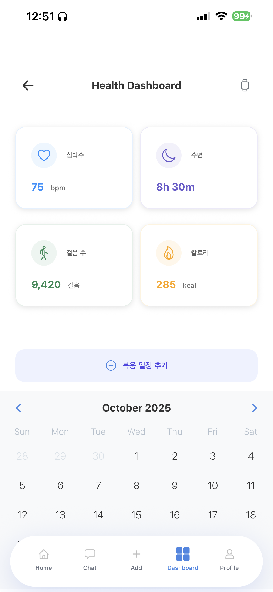
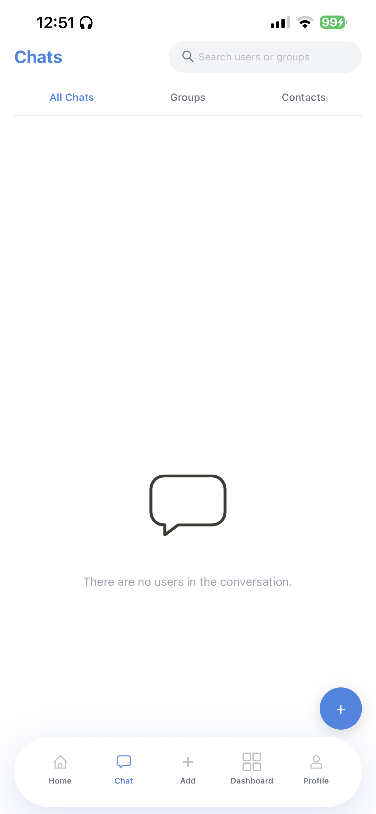
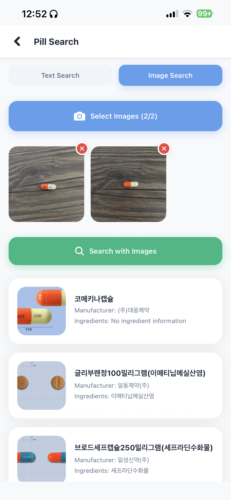
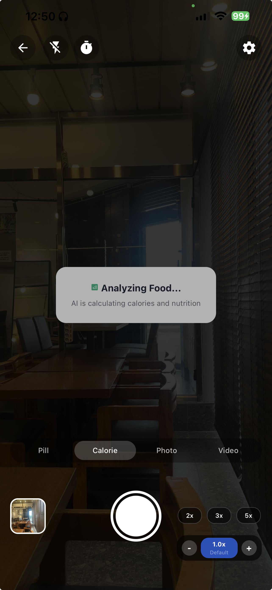
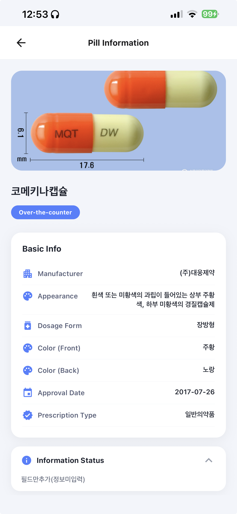
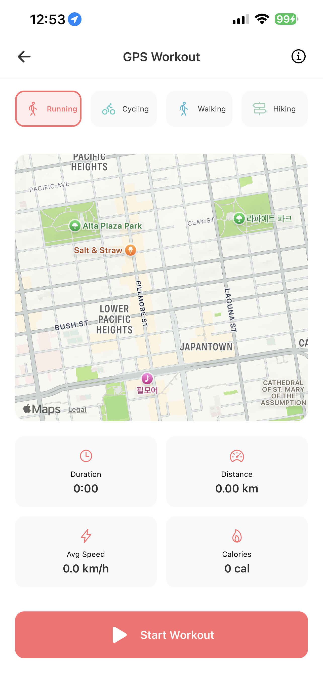

AI로 기록하고
모두와 공유하는 건강한 습관
CareRing은 AI 음식/알약 인식부터 건강 챌린지를 공유하는 소셜 피드까지, 당신의 건강한 삶을 기록하고 응원하는 헬스케어 플랫폼입니다.
CareRing, 무엇이 다른가요?
AI와 소셜이 결합된 특별한 헬스케어
AI 기반 자동 기록
음식과 알약을 카메라로 비추기만 하면 AI가 영양 정보와 약품 성분을 자동으로 분석하고 기록합니다.
건강 습관 공유 피드
자신의 식단과 운동을 공유하고, 다른 사용자들과 소통하며 건강한 동기부여를 주고받습니다.
맞춤형 건강 캘린더
복용 약, 운동 일정, 칼로리 섭취 현황을 캘린더와 대시보드에서 한눈에 확인하고 관리합니다.
앱 미리보기
CareRing의 다양한 화면들을 만나보세요.






적용 기술
안정적이고 확장 가능한 서비스를 위해 사용된 기술입니다.
Frontend: React Native
Backend: Go, Gin (Web Framework), GORM (ORM), Redis (Cache & Pub/Sub)
AI/ML: Python, FastAPI, PyTorch, Hugging Face Transformers
Database: MySQL
Architecture: Microservice Architecture (MSA)